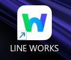
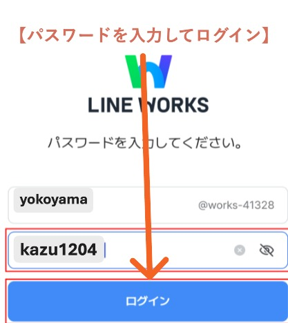
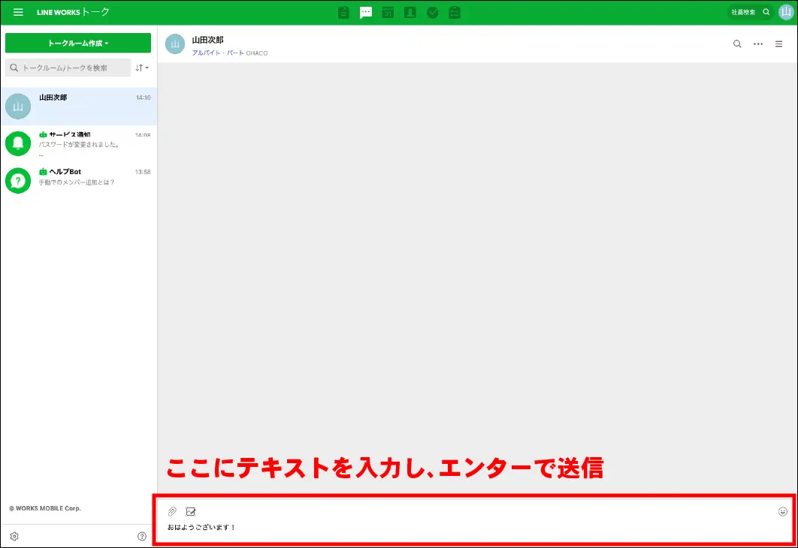
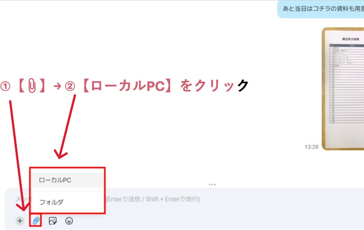
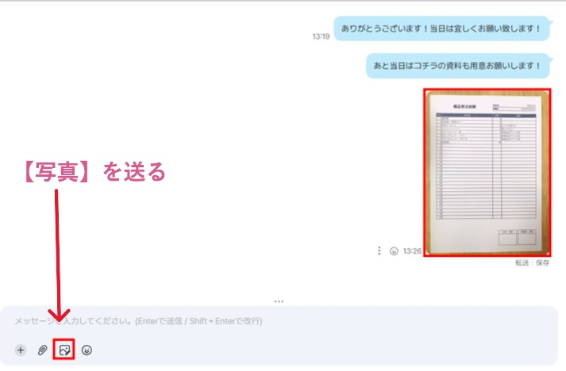
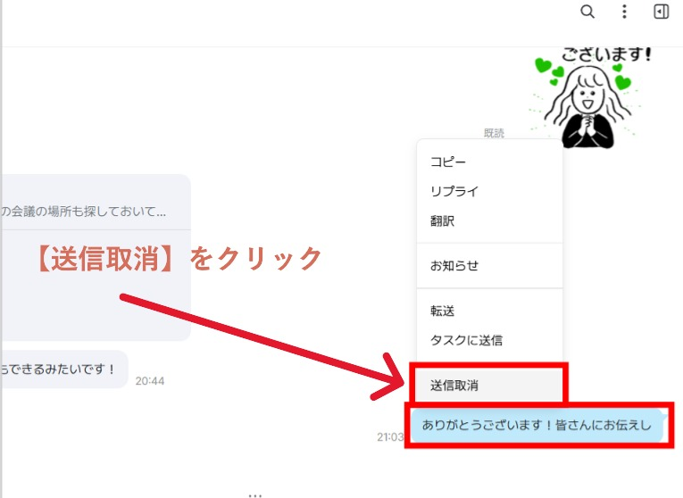
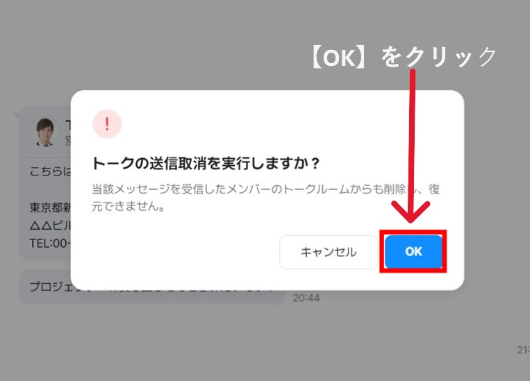
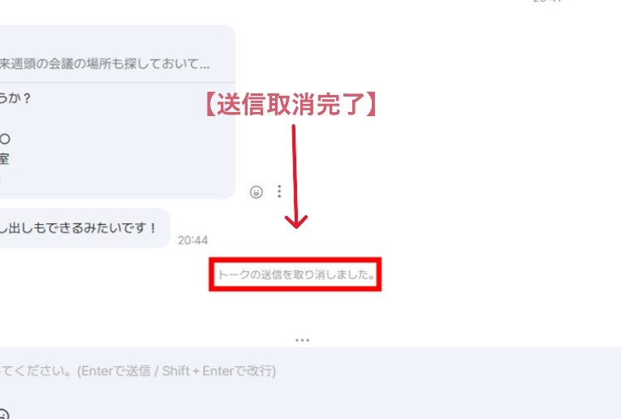
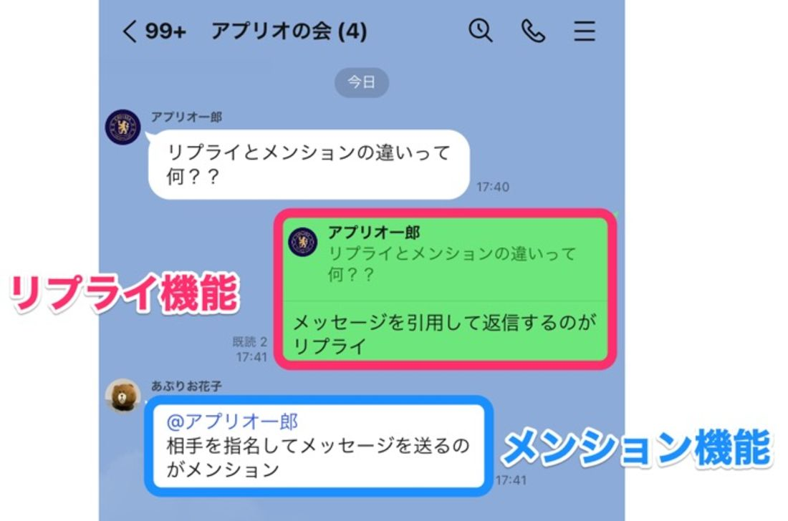
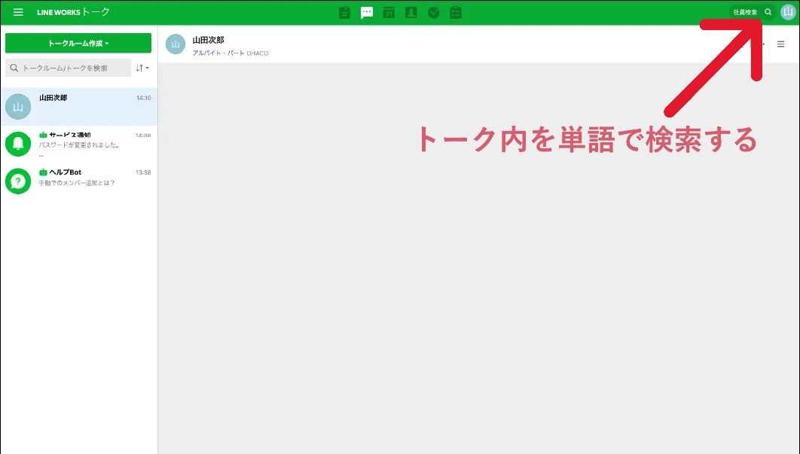

LINE WORKSマニュアルです。画面の写真を見ながら、一つずつ覚えていきましょう。

デスクトップにある「LINE WORKS」というアイコンを探します。見つかったら、ダブルクリックして開きます。

「パスワード」を入力します。
横山さんのLINE WORksログイン【ID】yokoyama@t-jyuuhann
ログイン【パスワード】kazu1204

・日曜と水曜は不動産部のメッセージを確認する
・伝言などはメッセージとして送信しておけば記録にもなるので、なるべく送信しておく

・📎マークをクリックして、ローカルPCに保存しているファイルを選択
・横山さんがファイルを保存した場所を指定していく【ローカルpc】➡【デスクトップ】➡【ファイル名】のように

・🖼マークをクリックして、ローカルPCに保存している画像を選択
・ファイルも画像も送信方法は一緒

・メッセージを右クリックして取消しor送信取消を選択する
・取消し … 自分のトーク内で取り消す（みんなのトークにはメッセージが残る）
・送信取消 … トーク内で取り消す（みんなのトークのメッセージも取り消せる））



・リプライ … メッセージを引用して返信する（返信したいメッセージを右クリックでリプライを選択）
・メンション … メッセージの送信相手を指名して送信する（＠マークを入力するとメンバーの氏名がでるので送信したい相手を選択する）
＠横山（自分に対してメッセージが送信ンされた場合、＠自分の氏名で送信される。）

・トークルーム内をキーワードで検索する
・例えば、「TJパーキングの立ち合いLINEで頼まれてたけど時間を忘れてしまった」そんな時にトークルーム内を「TJパーキング」で検索すると過去のメッセージから探してくれます
・改行しようとすると、つい「Enter」を押してしまいがち
LINEで改行はしないのもあり